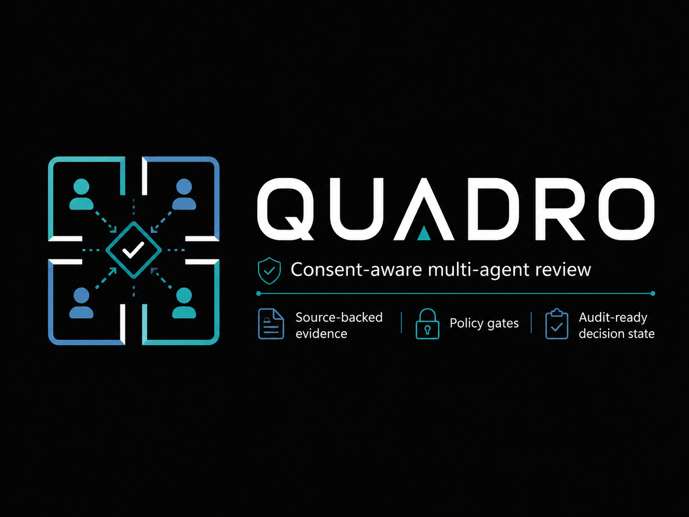

What It Does
Quadro routes customer review work through four specialized agents: intake, evidence, policy risk, and decision packet. Each handoff is written as review evidence instead of hidden prompt chatter.
Renaissance Field Lite / Band of Agents / Track 3
Consent-aware multi-agent review for regulated customer escalations: source-backed evidence, policy gates, partner model readouts, and an audit-ready decision packet.

Quadro routes customer review work through four specialized agents: intake, evidence, policy risk, and decision packet. Each handoff is written as review evidence instead of hidden prompt chatter.
Clone the repo, install the package, launch the local app, then open the review workspace.
python3 -m venv .venv
.venv/bin/pip install -e .
.venv/bin/python -m quadro.server
Submitted demo
This is the demo video used for the Band of Agents submission. It explains the review problem, the four-agent workflow, Band collaboration, acceptance coverage, and the AI/ML API plus Featherless verifier lanes.
Acceptance clips
Each short clip starts from a real local Quadro UI run: the acceptance set is loaded into the workspace, the review is sent through the agents, and the compact condition card closes the clip. Together they show Quadro hitting approve, say no, need more information, consent reroute, and hard policy-block conditions.
Consent, refund evidence, and approval policy are present; Quadro moves to human signoff.
Customer authorization is withdrawn before export; Quadro stops the workflow.
Consent and financial evidence exist, but required approval authority is missing.
Consent narrows mid-workflow; Quadro reroutes evidence and policy before final signoff.
A public-sector vendor screen hits a hard procurement policy block.
Enterprise licensing
Quadro can be adapted for regulated customer escalation, compliance review, legal intake, procurement, insurance, finance, cybersecurity disclosure, and internal approval workflows where consent state, evidence, and policy gates must move together.